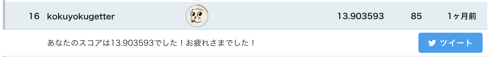
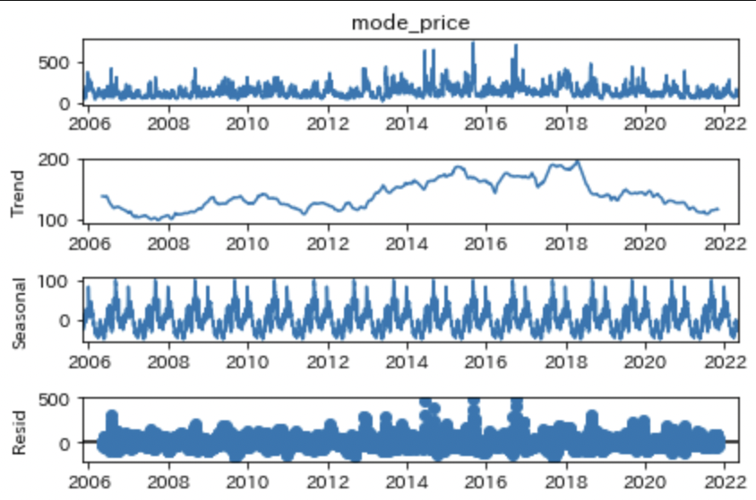
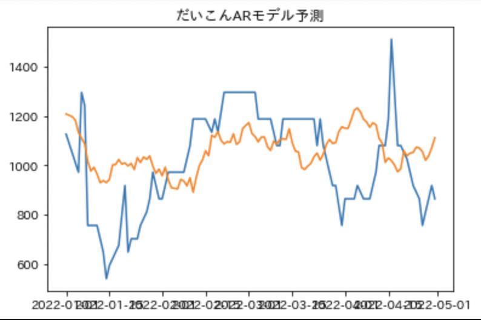
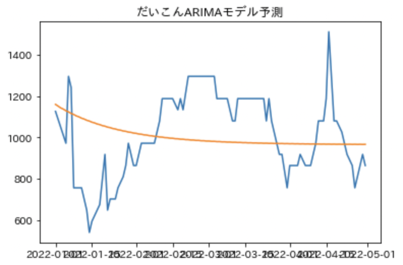
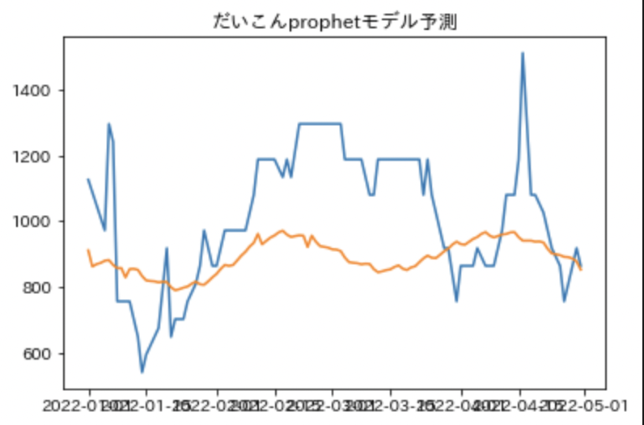
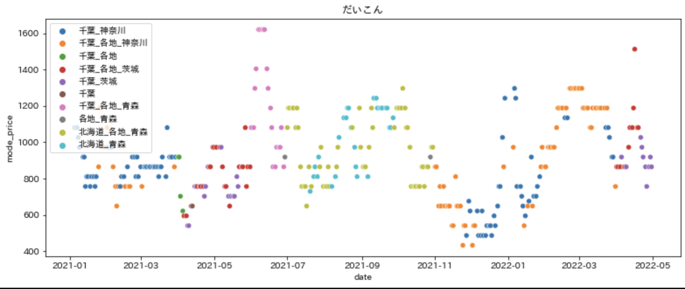

Nishikaの生鮮野菜のコンペで16位取るためにやったこと

MLエンジニアに転職したのもあって勉強がてらいろんな方法を試していたらそこそこの順位になったので、
どんなことをやっていたか書き残していこうと思います。
Table of Contents
データについて
本コンペでは、生鮮野菜の価格予測をテーマにします。 目的変数は、大田市場にて相対取引されている各野菜の日次の卸売価格とし、予測期間は最も多くの種類の野菜が市場に出ている2022年5月とします。 予測対象の野菜は、以下16品目です。 きゅうり,こまつな,じゃがいも,そらまめ,だいこん,なましいたけ,にんじん,ねぎ,はくさい,ほうれんそう,キャベツ,セルリー,トマト,ピーマン,ミニトマト,レタス
https://www.nishika.com/competitions/32/summary#description より引用
今回のデータはテーブルデータなのですが1、titanic等とは違って時系列データになっているので、今までのtitanicなどの練習コンペとは一味違うデータとなっていました。2
EDA（探索的データ分析）＋ベースラインモデルの構築
-
時系列データといえば、ARモデルやARIMAモデル、prophetなどを聞いたことがあったので、その辺を軽く試しつつ、EDAを手探りで行っていきました。
-
とはいえ、時系列データのEDAって何をすればいいんだ？と思いながらデータを眺めたりしていました。グラフを書くにも時系列でプロットする方法に手こずったりしていました。
-
それぞれtestデータに含まれる野菜の種類を抜き出して、価格の移動平均線をいろんな日数でプロットしたり、コレログラムを描いたりしました。
-
また、statsmodels.tsa.seasonal.seasonal_decompose.plot()という時系列データを眺めるのに？便利な関数があることも分かったのは良かったと思います。  こんな感じでトレンドとか季節成分とかをいい感じに分解してくれる
-
ARモデル等それぞれのモデルでパラメータとか気にせずに適当にやった結果は以下の通り  良さそう  う〜ん。。。  まあまあ
-
あとは生産地を考慮するかどうかでこういうプロットも描いたりした。  生産地の変化する点においても、ある程度連続的に見えたので地域差は気にしなくていいことにした
前加工
- 前加工としては、公式のチュートリアルコードを参考に進めていきました。
- まず、市場が開いてない日があるとprophet等の予測をどう解釈していいのか分かりにくかったのもあり3、（やっていいのかわからないですが）開いてない日の価格も線形補間したデータを作成しました。
- データを見て、あまりに予測不可能そうな山／谷を過学習するのを緩和するために、移動平均をとったデータなども作成しました。
- また、チュートリアルのデータは月平均（だったかな？）なので、そこは日次データに直して天気データとマージしたデータなどを作成しました。
- 予測するにあたって、ちょうどその時間の説明変数をそのまま使うことはできないので、価格データや天候のデータそれぞれについてラグ特徴量をとったものを作成しました。
作成したモデル
- prophetモデル
- ARモデル 上のベースラインモデル作成時において割と良さそうだったARとprophetは採用。
- RandomForestモデル よく使われがちなRF。
- SGDregressiorモデル
- ElasticNetモデル ラグ特徴量を多くとっているので、変に過学習しないようにという意図で採用
- lightGBMモデル よく使われがちなlightGBM。 これらのモデルを最後にアンサンブルして提出しました。
モデルの評価等
- 評価用に202204のデータをsplitしました
- 全訓練データを使うと評価のスコアがイマイチになることがあり、スコアベースで適切な年から最新のデータまでを入れるようにしました。
- テストデータを予測するときに時系列の一番近いはずのデータ（202204データ）を含めて再学習して予測しました。
提出前加工と提出しながら調整
- 色々アンサンブルとかブレンディング
- それぞれのモデルが予測した結果の単純平均をとったもの -> 微妙
- ノリで重みをつけて平均 -> 有効だが、低いモデルの予測がいらなくなって消えていく。それがいいのかわからない。
- 202204のデータを評価用にして、線形回帰で重みを計算 -> 負の係数が出てしまい、それぞれのモデルはピッタリ合うようにしていることを鑑みるとやっちゃダメな気がした。
- scipy.optimize.nnlsで非負最小二乗法で重みを計算 -> 微妙だった
- 野菜の種別ごとに非負最小二乗法で重みを計算 -> 評価データに対してはメチャクチャ良かったが、testはだめだった
- Public scoreベースで重みをつけたアンサンブル -> 結構有効だった。
- 実は途中までチュートリアルのPublic Scoreに全く勝てなかったのが辛かった。途中でラグ特徴量を大量採用しようやくチュートリアルのスコアを超えたので、チュートリアルの結果は最終的には採用しなかった。
結果＋考察その他
- 最終的にPublic Scoreベースのアンサンブルと、ノリで重みつけした2モデルを提出し、天候と価格のラグ特徴量を全て使ったscoreベースのアンサンブルが13.903593のFinal Scoreで16位になりました。初銀メダル！
- 過去に出した全ての最終スコアの一覧を見ていると、ランダムフォレスト単体のモデルが12.98でこれを提出していれば5位になっていたようです。単体スコアも低くないので、やはりランダムフォレストは未だ現役だなと思いました。
- 最後の1ヶ月は他の勉強をしていたこともあり、なかなかコンペをやっていませんでしたが、4位解法( https://www.nishika.com/competitions/32/topics/353)を見ると、メチャクチャ単純なこともあり、自分が本気でラスト1ヶ月取り組んでも逆に複雑化して泥沼だっただろうなと思います。
- まああとは時系列でデータもそんなに多くないのもあって、ある程度のScoreのブレはありそうなので、そこまで細かいことは言うまいかなとは思います。
やりたかったができなかったメモ
- 天気のみデータで学習するとスコアは微妙そうだが、多様性は得られるのではないか。
- RNNなどのディープラーニング手法も可能なら試したい
- prophetに説明変数追加できるの知らなかったので追加してもいい -> https://qiita.com/japanesebonobo/items/e674359618a879a49c05
- 時系列要素を残すために説明変数に基準日から数えて何日目かを追加していたので、線形補間してないデータで予測しても良かったかも
- 勾配降下法を用いる回帰で標準化するのを忘れていた。（elastic netやsgd）
- 今の野菜に対して今の気温データ等で当てはめるのはワンチャンあるはず。そして気温データ等は季節変動があることを考えると時系列モデルでの予測が容易に思われる。→気候データをARとかARIMA等でフィッティングしてからその気候データを使ってmode_priceを予測する。
- 市場が休みの前日は叩き売りするのではないか検証
-
画像処理等はマシンスペック的にもやりづらいということでテーブルデータかつactiveなコンペをいろんなサイト(kaggle, signate, nishika, probspace)で探しました。 ↩︎
-
この前に 【第23回_Tier限定コンペ】採血データを使った心不全予測 もactiveなテーブルデータコンペでしたが、こちらは初心者用なのでtitanic的な立ち位置として消費しました。 ↩︎
-
データ点が等間隔であることが仮定されているような予測結果になった気がしますが、ちゃんと調べていないので嘘かもしれません。 ↩︎